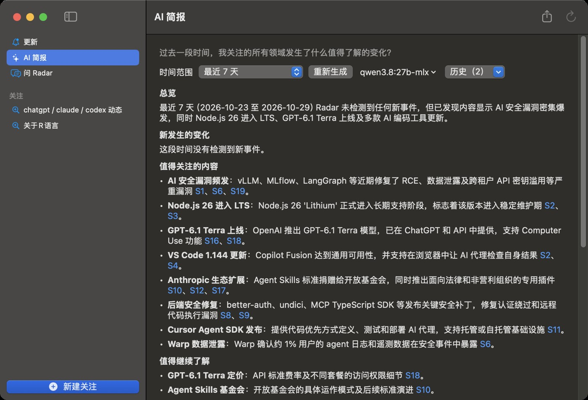
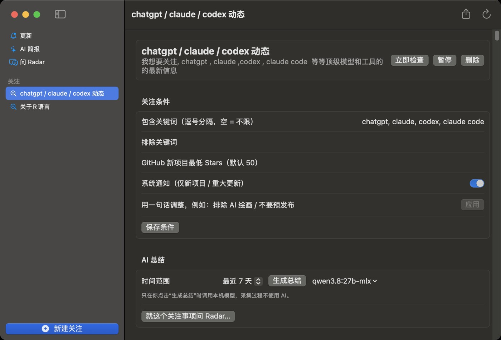

Software / macOS app
Radar
An information radar
Describe what to follow in plain language, collect on a schedule, and get events that link back to the source.

What it is
Describe what to follow, preview sources and collect updates on a schedule. Radar distinguishes the initial baseline from later changes, preserves original links and can merge reports of the same event. On request, local Ollama produces sourced briefings or answers questions about collected material.
Features
- Sources include GitHub, RSS, web pages, JSON endpoints and Hacker News
- Build an initial baseline, then deduplicate and merge new events with source links
- Menu-bar operation, notifications, scheduled checks and catch-up after wake
- Local Ollama briefings and Q&A with traceable source references
- Source coverage, missed-event analysis, source status and source export
Screenshots
